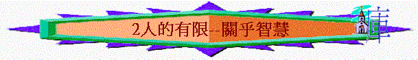

引言：你認為今日人是否全能？有甚麼限制？
or
活動：嘗試一口氣拉長唱一個音階，看那位新朋友最「長氣」，而帶出人始終有限，不能永遠無盡唱出一個音階，你認為今日人是否全能？有甚麼限制？
一.身體有限(傳12:12,12:1-5)
1.
聖經題到「書」，你今日喜歡看甚麼書？
2.
你同意「著書多，沒有窮盡，讀書多，身體疲倦」這句話的內容嗎？為甚麼？
3.
有否體會「有一些事情你很想作，但身體卻有限制不能完成」？
4.
12:1-5題及人到了衰敗年老的日子，會有甚麼事情發生？
5.
今日在這個社會，人懼怕「衰老」嗎？為甚麼？你又怕不怕？
二.生命有限(7:2)
1.
為何「往遭喪的家去，強如往宴樂的家去」？
2.
有否出席一些喪禮令你更深體會人生的意義？
3.
聖經題到眾人的結局如何？歷世歷代的人用甚麼逃避這結局？
4.
人的生命有限，離開世界會往那�堙H12:7又說明人的靈會往何處？
5.
有人說：「人生既然有限，倒不如吃喝玩樂，放縱自己，犯罪也不介意」，你同意這看法嗎？
6.
聖經又題到人至終的結果是甚麼(11:9)？
三.敬畏真神(傳12:1,13-14)
1.
若我們知道自己的人生有限，有一日必要見真神，我們應如何過今生的日子？
2.
聖經題及我們應怎樣過地上的生活(12:1,13-14)？為何要這樣過？你同意嗎？